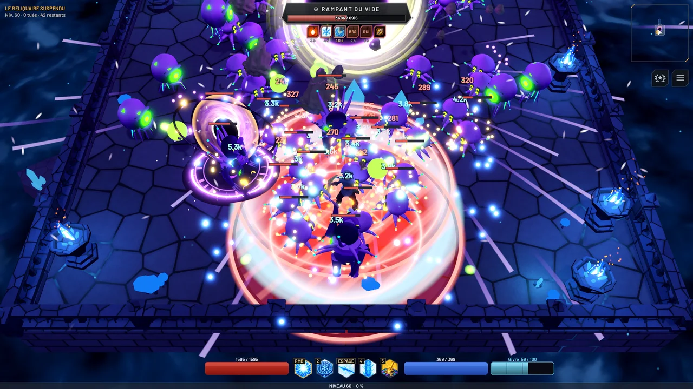
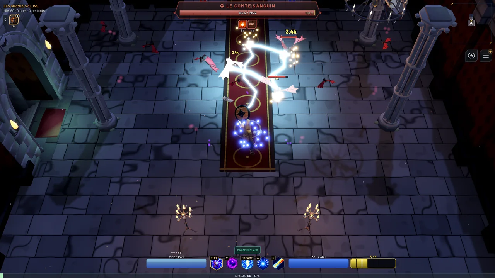

Le Graveur de Runes, ligues et Castel
Le Graveur de Runes, les invasions spatiales, les failles glitchées et le Castel Sanguin en acte II.
Une neuvième classe, deux ligues (invasions spatiales et failles glitchées), le Castel Sanguin en acte II, une passe de combat, la manette et une trentaine de nouvelles compétences. Bon jeu !
Le Graveur de Runes
Neuvième classe : la Gravure Runique grave au sol, tour à tour, les runes de vos quatre emplacements. Deux glyphes d'éléments différents qui se chevauchent réagissent — Fracture thermique, Plasma, Supraconduction… — et le Verbe de Rupture les fait tous détoner.

Ligue spatiale
Des trous noirs s'ouvrent sur les cartes et crachent des aliens. Les fermer rapporte des cellules d'énergie : l'astronaute du refuge les échange contre des expéditions vers dix planètes à conquérir, jusqu'au Dévoreur d'Étoiles.

Failles glitchées
Des cartes corrompues remplies de bugs, quatre types de failles, des objets glitchés avec un affixe exclusif et le Noyau Corrompu au bout de la faille récursive.

Le Castel Sanguin
Le Castel devient l'acte II, avec ses quatre gardiens : le Bourreau des Geôles, la Comtesse Écarlate, Sire Morvan et le Gardien de la Nef. Le Domaine du Castel ouvre la voie sous une lune de sang.

Notes de version
Nouvelle classe : le Graveur de Runes
- Gravure Runique : grave tour à tour les runes de vos 4 emplacements (débloqués aux niveaux 1, 6, 14 et 24, choisis dans l'onglet Classe). 4 glyphes au plus en même temps.
- Runes de Brasier (feu), Givre (froid), Tonnerre (foudre) et Flétrissement (érosion, ex-Malédiction de Flétrissement).
- Réactions : deux glyphes d'éléments différents qui se chevauchent réagissent — Fracture thermique, Plasma, Supraconduction, Flamme noire, Nécrose glacée, Arc du vide.
- Verbe de Rupture : fait détoner tous les glyphes ; toutes les paires réagissent, sans recharge.
- Résonance (niveau 5) : +40 % de dégâts aux réactions. Arbre de classe de 12 nœuds (Catalyse, Cascade, Rune vivante, Confluence…).
- Pierres gravées en orbite autour du héros : la plus grosse est la prochaine rune.
- Supports de rune : Glyphe Durable, Glyphe Instable, Rune Jumelle.
- Légendaires : Craie du Premier Graveur, Gantelets du Sceau Errant, Couronne des Quatre Sceaux, Anneau de la Ronde Runique, Bâton du Grand Cycle, Lexique du Silence.
Nouvelles compétences
- 8 gardes, instantanées, sans interrompre l'action : Surcharge du Bouclier, Garde Inébranlable, Pas de Brume, Peau de Pierre, Mur de Boucliers, Égides des Flammes, du Givre et de l'Orage.
- 7 malédictions de zone (une seule par ennemi) : Flammes, Givre, Orage, Néant, Supplice, Fragilité, Brisure. Support Aura Maudite : la malédiction devient une zone autour de vous.
- Renforcements (8 s, +10 % aux compétences du type) : Ferveur Martiale (+2 % par ennemi proche), Sceau des Arcanes (prix du sang : vie perdue, dégâts gagnés), Fléau Rampant (spore qui Ronge les ennemis). Convocation devient un renforcement : rappel des serviteurs au curseur.
- Frappe Gangreneuse (mêlée, Gangrène cumulable).
Porte-Peste et érosion
- Classe réécrite autour de l'érosion : départ avec Contagion, Virulence qui monte avec les ennemis affligés, Épidémie à 100.
- Contagion : nuage de spores qui saute sur 2 ennemis à la mort du porteur (4 sauts au plus), sans perte de dégâts.
- Emprise : canalisation, liens d'érosion sur plusieurs ennemis, qui sautent à la mort.
- Faux de la Moisson : la Moisson inflige d'un coup plusieurs secondes de tous les dégâts sur la durée de la cible.
- Le poison disparaît : il devient l'érosion des coups (Croc de serpent ; Venin renommé Corrosion pour la Rôdeuse).
- Les sorts d'érosion infligent de vrais coups d'érosion, jamais réduits par les résistances élémentaires. Trou Noir passe à l'érosion.
- Malédiction de Flétrissement : 1 Flétrissure par seconde sans condition, érosion +75 %.
- Supports : Virulence Concentrée, Lente Agonie, Moissonneur, Propagation, Pourriture Croissante, Flétrissure.
- Légendaires : Gantelets de l'Éclosion, Anneau du Glaneur, Couronne des Rats, Semeuse de Peste, Linceul de l'Éternelle Pourriture, Faux de la Dernière Heure.
Talents
- Nouveaux arbres de dieux : Seigneur des Serviteurs (tous les serviteurs), Maître des Afflictions, Faucheuse des Fléaux, Seigneur de l'Entropie.
- Maître des Légions recentré sur les serviteurs d'Os, nœuds renommés.
- Déesse du Savoir : nouveaux talents majeurs (Ritournelle, Cycle des Arcanes, Sablier inversé, Runes ancrées, Roue des éléments, Plein du flux). Un personnage qui avait l'ancien choix garde le nouveau du même rang.
- Choix du dieu réorganisé en 5 voies, avec une fiche par arbre.
- Arbre de classe : clic droit pour désapprendre un nœud (si rien n'en dépend).
Compétences : passe générale
- Distances et zones affichées enfin justes (l'ancien calcul les donnait 1,7 fois trop courtes) ; une cinquantaine de descriptions corrigées.
- Infobulles : dégâts réels par coup, portées, cadences, coût de canalisation par seconde, vraie vie et vrais dégâts des serviteurs, valeurs réelles des auras.
- Armée d'os : un squelette par lancer, jusqu'à 4 (niveaux 1, 9, 17, 25), plus robustes au début.
- Totems élémentaires redessinés (piliers et gemmes), foudre en blanc-bleu partout, flèches physiques en acier chaud, Nova de Givre moins éblouissante, tache de braises à l'impact de la Boule de Feu.
- Support « Rayonnement » des totems renommé Totem Rayonnant.
- Supports retirés là où ils n'avaient aucun effet : Impulsion sans recharge, Crescendo sur les serviteurs, Serviteurs instables sur les Feux follets, Rebond sur les projectiles tombants et l'Orbe de Foudre…
Ligue spatiale
- Invasions : un trou noir peut s'ouvrir en Terres errantes (22 %) et en campagne dès la 4e zone (20 %). Il crache des aliens de trois familles (Essaim Vorace, Cristallins, Abyssaux du Vide) et implose quand la faille est vidée, en lâchant tout le butin d'un coup.
- Fermer une invasion rapporte des cellules énergétiques (2 en Terres errantes, 1 en campagne). La première fait venir l'astronaute sur son île du refuge.
- Expédition (chez l'astronaute) : traversée d'astéroïdes, 1 cellule par saut, jusqu'à une planète à conquérir. Les astéroïdes renforcent les aliens et le butin ; rencontres à choix (épave, signal, anomalie, pluie d'étoiles).
- 10 planètes, chacune avec un bonus permanent qui monte avec ses étoiles. Système solaire : 3 orbites, alignements et synergies de familles.
- L'Étoile noire : 3 fragments ouvrent la carte du Dévoreur d'Étoiles (trois failles puis la Grande Faille, 3 vies). Légendaires exclusifs : Couronne du Dévoreur, Horizon des Événements, Anneau de l'Étoile morte.
- Événements sur 10 % des cartes : pluie de météores, largage de ravitaillement, anomalie gravitationnelle, alien doré.
- Nouveaux monstres : Vorace, Cracheur d'épines, Broyeur de couvée, Acarien de quartz, Mante prismatique, Lanceur de lumen, Rampant du Vide, Œil errant, Gueule abyssale ; boss La Reine de la Couvée, Le Tyran de Quartz, Le Héraut du Néant.
Ligue glitch
- Failles glitchées : 24 % des cartes des Terres errantes, 16 % en campagne dès la 3e zone. On y entre avec la touche d'interaction : la carte se « dé-rend » et se remplit de bugs à corriger.
- 4 types : glitchée, critique (bugs bien plus forts), volatile (70 s), récursive (4 profondeurs, puis Le Noyau Corrompu).
- Bugs : Octet errant, Ver de pile, Corrupteur, Cheval de Troie, Fuite de mémoire.
- Objets glitchés : un affixe exclusif en plus (Duplication, Pointeur nul, Boucle infinie, Copie fantôme…). La forge ne peut pas les modifier.
- Légendaires du Noyau, plus forts avec chaque objet glitché porté : Cœur du Noyau, Masque Kernel Panic, Lame Null Pointer.
- Le Scientifique s'installe sur l'île-laboratoire du refuge : journal des failles, affixes connus.
- Arbre des Terres : 7 nœuds glitch (Paquet corrompu, Récursion, Erreur fatale…).
Campagne et cartes
- Nouvel ordre : acte I (Lisière → Sentier des Os → Catacombes → Marais → Domaine), acte II = le Castel Sanguin (Geôles Noyées, Grands Salons, Aile des Appartements, Nef du Sang, Chemin de Ronde, niv. 9–15), acte VII = le désert (niv. 49–55). Les anciennes sauvegardes gardent leurs cartes finies.
- Marais de Brumevase refait : passerelles sur l'eau, brume, lucioles, grenouilles, hérons ; départ au pied de la butte du terrier ; 108 monstres.
- Domaine du Castel Sanguin (nouveau) : allée, fontaine, cimetière familial, douves, pont-levis, brèche des geôles ; pluie, éclairs, lune de sang qui rougit à l'approche. Gardien : la Bête de la crypte.
- Caméra tournante dans certaines zones (Domaine), sans jamais changer la direction du héros ; la minimap tourne avec la caméra (repère N).
- Catacombes : torches à vraies flammes, sarcophages sculptés, toiles translucides, plus de monstres ; sortie par la bouche du terrier vers une prairie boisée.
- La Lisière : plus d'algues ni de flaques de marée, écorce et bois flotté refaits, trouée autour du héros plus légère (meilleures performances).
- Ambiances sonores propres à chaque salle du Castel, au Marais et au Domaine. Bruits de pas selon le sol.
Gardiens et monstres
- Nouveaux gardiens du Castel : Le Bourreau des Geôles, La Comtesse Écarlate, Sire Morvan, Champion du Sang, Le Gardien de la Nef.
- Monstres du Castel rééquilibrés ; le Comte Sanguin beaucoup plus rapide et moins résistant.
- Grumm, le Fossoyeur, le Seigneur des Ossuaires : modèles enrichis, entrées en scène, seconde phase à 50 % avec rage et nouvelles attaques.
- Seigneur des Ossuaires : fauchée large et revers, glissade spectrale, −10 % de vie.
- Vie des gardiens de campagne moins exponentielle (−10 % au niveau 6, −43 % au niveau 30). Zig-Zag, Grand Oracle Gobelin, moins dangereux en campagne.
Histoire
- Cliquetis, un crâne volant bavard, vous suit de la fin de la Lisière jusqu'au refuge.
- Les affaires du Comte révèlent la fuite de la silhouette cendrée et une carte marine.
- Dialogues avec voix des personnages (Scientifique, Astronaute, Marchand, Cliquetis…).
Mort et Terres errantes
- Jalons : on se relève au tiers, aux deux tiers ou juste avant le gardien, plus au début de la carte.
- Écran de mort : Se relever, Recommencer ou Revenir au refuge (la carte reste en attente, portail RETOUR).
- Terres errantes : 6 vies par carte.
- Écran de mort détaillé : les 10 derniers coups, leur source et le calcul (armure, talents, boucliers).
Refuge
- Le refuge grandit avec vous : campement, atelier, pavillon des cartes, cercle de pierres.
- Île de l'astronaute et île-laboratoire, reliées par des ponts une fois débloquées.
- Marchand plus compact.
Passe de combat et cosmétiques
- Passe de combat gratuite (touche J) : 61 défis, 8 rangs de Recrue à Mythe. Progression du compte, défis déjà remplis comptés dès l'ouverture.
- Cosmétiques (points de la passe, aucun effet de jeu) : 5 portails, 5 traînées de pas, 5 compagnons (crabe, grenouille, chauve-souris, hirondelle, feu follet), 4 thèmes d'écran titre (Braises, Cendres, Cosmos, Glitch).
Interface
- Tutoriel : premier talent, coffre de la Lisière (élixir de mana), support offert par le premier gardien, éveil de la classe. Désactivable (Options → Jeu → Aides de jeu).
- Une seule invite d'interaction en bas de l'écran, avec la vraie touche.
- Nouveaux cadres de cible et de boss (affixes, altérations, graduations), barre des effets actifs repliable.
- Annonces centrales refaites ; déblocages simultanés regroupés.
- F3 : carte de performances (cachée, compacte, détaillée).
- Montée de niveau des compétences : bouton ▲, encart au-dessus de la touche.
- Filtre de butin en 3 écrans, plusieurs filtres nommés, aperçu en vraie clairière.
- Sélection de personnage : classe, progression, temps de jeu, ordre par glisser-déposer. Choix des touches (ZQSD, WASD, souris) à la création.
- Polices plus nettes à toutes les résolutions.
- Chargements réguliers, sans palier à 80 %.
Options et manette
- Options → Affichage réécrit : mode de fenêtre, choix de l'écran, préréglages Bas à Ultra, aide au survol ; plein écran à la résolution native.
- Manette et Steam Deck : visée au stick assistée, curseur virtuel dans les menus, libellés A/R1…, réglages adaptés au premier lancement, aide dans Options → Contrôles.
Mises à jour
- Mise à jour automatique plus fiable : plus de boucle de relance, taille et empreinte du fichier vérifiées, journal
update.log. - Téléchargements sur un nouveau serveur, sans rien changer de votre côté.
Corrections
- Bond Fracassant : Traînée de feu, Élan et Grand Élan fonctionnent.
- Onde de Choc : fonctionne aussi sur Ruée, Fente, Bond de l'Ombre et Tourbillon.
- Totems élémentaires et Trou Noir : la zone de dégâts correspond au cercle affiché (85 % avant).
- Totem Ardent + Totem Frénétique : la brûlure tique plus vite. Totem de Foudre + Rebond : les rebonds comptent. Totem de Glace : la vitesse des projectiles s'applique.
- Flèche de Givre : vitesse des éclats comptée une seule fois. Étincelles + Tout Autour : répartition sur 360°.
- Orbe de Foudre : texte corrigé (une décharge toutes les 0,5 s). Pluie de Flèches : efficacité affichée exacte.
- Totem de sort, Convocation et traînée de la Flèche Incendiaire posés à la vraie hauteur du sol.
- Emprise : les dégâts arrivent avec le rayon.
- Effets au sol (érosion, sceaux, feu) qui épousent le relief au lieu d'être coupés par les pentes.
- Catacombes : le héros ne sort plus de terre au départ ; bougies et champignons sans socle flottant ; faux du Seigneur des Ossuaires à l'endroit ; plus de puits noir à la sortie.
- Domaine : les haies mortes ne flottent plus.
- La Lisière : plus d'arbres plantés dans le sable.
- Refuge : écume des pieux du ponton recentrée, écume de la barque pendant l'intro.
- Pluie qui suit la rotation de la caméra ; papillons visibles vus de dessus.
- Écran de mort sans l'aide « Entrée » superflue ; aperçus des thèmes non étirés.
- Plein écran net : le rendu suivait la taille de fenêtre enregistrée au lieu de la résolution de l'écran.